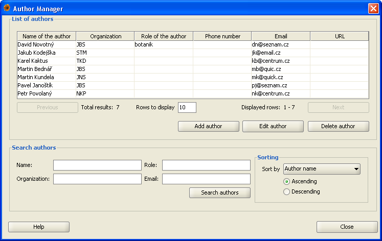
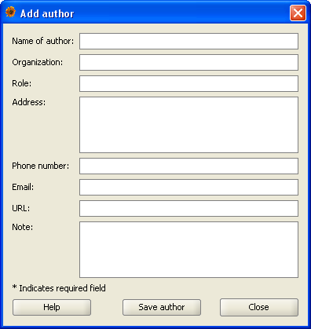

Author manager
Author manager allows users to add, search, modify and delete authors of the occurrence records.
It can be invoked from menu Data|Author Manager.
The Author Manager window consists of two main parts:
- The list of authors - where the results of the search are displayed
- The search criteria - where you can specify search parameters

The list of authors
After a succcessful search results are displayed in the list of authors, although not all of them can
be seen immediately. Initially, only the first page of the results is displayed. To see the rest
of the pages use Next and Previous buttons which can be found directly under the list.
In case you would like to display more authors per page, input the requested number of authors to the
field below the list of authors.
This part also includes buttons for adding, editing and deleting authors. The Add author and
Edit author buttons open the Add/Edit Author Dialog (see below), the Delete author
button removes the author after the confirmation. When Edit or Delete
button is pressed, an author must be selected in the list in order to proceed with the operation
(otherwise the system will warn you that there is no author selected). Adding and editing authors
is subject to the system of rights in plantlore. For more information on this topic, see the
appropriate help section.
The search criteria
Author manager allows users to search the data using 4 parameters: name, organization, role and
email. Results can be ordered by name, organization, role, email, phone number and URL in either
ascending or descending direction. Search string for any of the parameters doesn't have to match
the item in the database exactly and any substring will be sufficient (although it might yield more
results). To start searching use Search authors button.
The search is by default case insensitive.
After the manager window is opened, all available authors are displayed. If you've executed a search
but you want to display and browse all available authors again, press the Search authors
button while all of the search fields are left blank.
Adding and editing authors
Window for adding new authors can be opened from the main Author Manager window using Add
author button. This window contains the following fields:
- Name - Whole name of the author. This field is compulsory and cannot be left blank. Maximum length of an item in this field is 50 characters
- Organization - Organization or institution to which the author belongs. Maximum length of an item in this field is 50 characters
- Role - Role of the author in the given institution. Maximum length of an item in this field is 30 characters
- Address - Address of the author. Maximum length of an item in this field is 255 characters
- Phone - Phone number of the author. Maximum length of an item in this field is 20 characters
- Email - Email address of the author. Maximum length of an item in this field is 100 characters
- URL - URL address (webpage) of the author. Maximum length of an item in this field is 255 characters
- Note - Any other information can be stored here. This field can hold up to 4096 characters.

New author can be saved using the Save author button in the bottom of the window. The only compulsory item is the name of the author.
In case you edit already existing author, all of the items are preloaded with the current parameters of the author and you can modify them. You can save the modifications by
pressing Save author button. All of the fields can be modified and the only compulsory item is the name of the author.